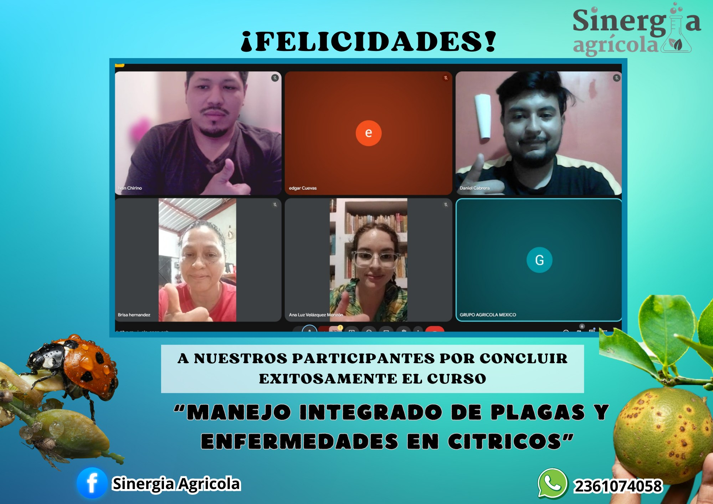
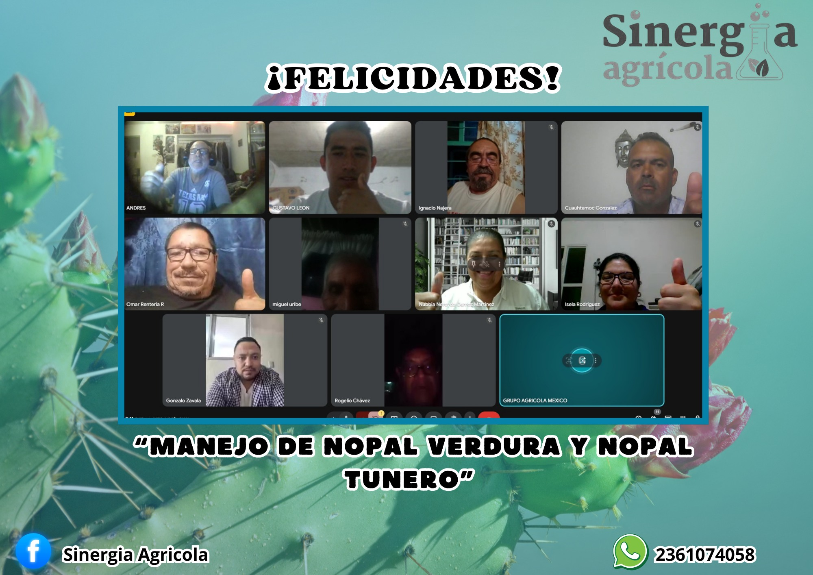

Diagnóstico & plan de manejo
Detectamos cuellos de botella (suelo, nutrición, plagas, riego, manejo) y te dejamos un plan accionable.
- Monitoreo + umbrales
- Calendario por fenología
- Bitácora y checklist
En Sinergia Agrícola convertimos la experiencia en resultados: diagnósticos, planes de manejo, capacitación y seguimiento.
En menos de 1 minuto por WhatsApp.
Consultoría completa: diagnóstico, plan, implementación y seguimiento.
Detectamos cuellos de botella (suelo, nutrición, plagas, riego, manejo) y te dejamos un plan accionable.
Estrategias que funcionan: prevención, biológicos, rotación y control responsable.
Cursos en vivo, directos y con herramientas listas para aplicar desde el día 1.
Busca por tema y abre cada curso para ver detalles y “Qué aprenderás”.
Capturas reales de cursos finalizados con participantes. (Tu evidencia de confianza)


Consultoría completa: de la estrategia al resultado.
Impulsar la productividad del campo con consultoría y capacitación práctica que se traduce en cosechas más rentables y sostenibles.
Ser la consultoría agrícola referente en México por resultados medibles, innovación técnica y acompañamiento cercano al productor.
Déjanos tus datos y te mandamos la info exacta por WhatsApp.
Resolvemos dudas, te orientamos y te inscribimos al momento.
Horario: Lun–Sáb • Atención nacional